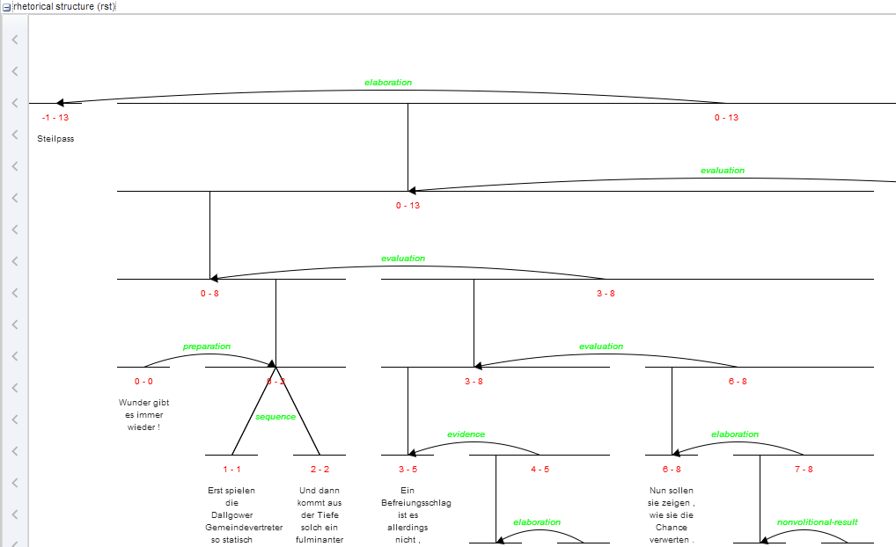

Introduction
ANNIS is an open source, browser-based search and visualization architecture for multi-layer corpora, developed at Humboldt-Universität zu Berlin, Georgetown University and Potsdam University. It can be used to search for complex graph structures of annotated nodes and edges forming a variety of linguistic structures, such as constituent or dependency syntax trees, coreference, rhetorical structure and parallel alignment edges, span annotations and associated multi-modal data (audio/video).

This user guide provides an overview of the current ANNIS system, first steps for installing either a local instance or an ANNIS server with a demo corpus, as well as tutorials for converting data for ANNIS and running queries with AQL (ANNIS Query Language).
Installation
There are two editions of ANNIS, one for the local use on a standard computer (ANNIS Kickstarter) and one which is only needed when running a web-server. Both versions require the Installation of Java OpenJDK 8. If your operating system does already include Java. we recommend the installation of the open-source and free of charge installers provided at https://adoptopenjdk.net/.
Installing a Local Version (ANNIS Kickstarter)
Local users who do not wish to make their corpora available online can install ANNIS Kickstarter under most versions of Linux, Windows and MacOS. To install Kickstarter follow these steps:
- Download and install PostgreSQL 9.4 (or above)
for your operating system from http://www.postgresql.org/download/ and make a note of the administrator password you set during the installation.
Some Linux distributions already package PostgreSQL, e.g. on Ubuntu Linux, you can install PostgreSQL with
sudo apt install postgresql. After installation, PostgreSQL may automatically launch the PostgreSQL Stack Builder to download additional components – you can safely skip this step and cancel the Stack Builder if you wish. You may need to restart your OS if the PostgreSQL installer tells you to.
Note: Under Linux, you might have to set the PostgreSQL password manually. E.g. on Ubuntu you can achieve this with by running the following commands:
sudo -u postgres psql
\password
\q
- Download and unzip the ANNIS Kickstarter ZIP-file from the ANNIS website.
- Start AnnisKickstarter.bat if you’re using Windows, AnnisKickstarter.cmd on Mac or run the bash script AnnisKickstarter.sh otherwise (this may take a few seconds the first time you run Kickstarter). At this point your Firewall may try to block Kickstarter and offer you to unblock it – do so and Kickstarter should start up.
Note: For most users it is a good idea to give Java more memory (if this is not already the default). You can do this by editing the script AnnisKickstarter and typing the following after the call to start java (after java or javaw in the .sh or .bat script respectively):
-Xss1024k -Xmx1024m
(To accelerate searches it is also possible to give the PostgreSQL database more memory, see the next section below).
- Once the program has started, if this is the first time you run Kickstarter, press “Init Database” and supply your PostgreSQL administrator password from step 1. If you are upgrading from version 3.0.1 of ANNIS Kickstarter or higher, you will be given the option to reimport your corpora, assuming they can still be found at the paths from which they were originally imported.
- Download and unzip the GUM demo corpus from the ANNIS website: http://corpus-tools.org/annis/corpora.html.
- Press “Import Corpus” and navigate to the directory containing the directory
GUM_annis/. Select this directory (but do not go into it) and press OK. - Once import is complete, press “Launch Annis frontend” test the corpus (click
on one of the example queries displayed on the screen, or try selecting the
GUM corpus, typing
pos="NN"in the AnnisQL box at the top left and clicking “Show Result”. See the sections “Using the ANNIS interface”and “ANNIS Query Language (AQL)” in this guide for some more example queries, or press the Tutorial button in the Help/Examples tab of the interface for more information).
Installing an ANNIS Server
The ANNIS server version can be installed on UNIX based servers, or else under Windows using Cygwin, the freely available UNIX emulator. To install the ANNIS server:
- Download and install PostgreSQL 9.4 (or above) for your operating system from http://www.postgresql.org/download/ and make a note of the administrator password you set during the installation. After installation, PostgreSQL may automatically launch the PostgreSQL Stack Builder to download additional components – you can safely skip this step and cancel the Stack Builder if you wish. You may need to restart your OS if the PostgreSQL installer tells you to.
Note: Under Linux, you might have to set the PostgreSQL password manually. E.g. on Ubuntu you can achieve this with by running the following commands:
sudo -u postgres psql
\password
\q
- Install a Java Servlet Container ("Java web server") such as Tomcat or Jetty
- Download the ANNIS service distribution file
annis-service-<version>- distribution.tar.gzfrom the website and then unzip the downloaded file:
tar xzvf annis-service-<version>-distribution.tar.gz -C <installation directory>
- Set the environment variables (each time when starting up)
export ANNIS_HOME=<installation directory>
export PATH=$PATH:$ANNIS_HOME/bin
- Next initialize your ANNIS database (only the first time you use the system):
annis-admin.sh init -u <username> -d <dbname> -p <new user password> -P <postgres superuser password>
You can omit the PostgreSQL administrator password option (-P). Then the
database and user must already exist. E.g. you should execute the following as
PostgreSQL administrator:
CREATE LANGUAGE plpgsql; -- ignore the error if the language is already installed
CREATE USER myuser PASSWORD 'mypassword';
CREATE DATABASE mydb OWNER myuser ENCODING 'UTF8';
Now you can import some corpora:
annis-admin.sh import path/to/corpus1 path/to/corpus2 ...
Warning: The above import-command calls other PostgreSQL database commands. If you abort the import script with Ctrl+C, these SQL processes will not be automatically terminated; instead they might keep hanging and prevent access to the database. The same might happen if you close your shell before the import script terminates, so you will want to prefix it with the "nohup"- command.
- Now you can start the ANNIS service:
annis-service.sh start
- To get the ANNIS front-end running, first download
annis-gui-<version>.warfrom our website and deploy it to your Java servlet container (this depends on the servlet container you use).
Note: We also strongly recommend reconfiguring the PostgreSQL server’s default settings as described here.
Tomcat: UTF8 encoding in server.xml
If using Tomcat make sure the UTF-8 encoding is used for URLs. Some
installations of Tomcat don't use UTF-8 for the encoding of the URLs and that will
cause problems when searching for non-ASCII characters. In order to avoid this
the Connector-configuration needs the property "URIEncoding" set to "UTF-8"
like in this example ($CATALINA_HOME/server.xml):
<Connector port="8080" protocol="HTTP/1.1"
connectionTimeout="20000"
URIEncoding="UTF-8"
redirectPort="8443"
executor="tomcatThreadPool" />
Install ANNIS Service and Web front-end on different servers
It is possible to install the service and the front-end on different servers. Per-default the ANNIS service is only listening to connections from localhost for security reasons. You should use a proxy server if you want to enable access from outside. E.g. the Apache configuration could look like this:
ProxyPass /annis3-service http://localhost:5711
<location /annis3-service>
SSLRequireSSL
</location>
If you your server is example.com this configuration would result in the service URL https://example.com/annis3-service/annis/
The service is responsible for the authentication and authorization (see the user configuration for more information), thus the corpora are only accessible by the service if the user can provide the appropriate credentials. HTTP Basic Authentication is used for transporting the user name and password as clear text over the network. Thus you should always make sure to enforce encrypted SSL (HTTPS) connections for the public accessable service.
After you made the service available for other servers you have to configure the front-end to use this non-default service URL.
Change the file WEB-INF/conf/annis-gui.properties and set the AnnisWebService.URL to the right value:
AnnisWebService.URL=https://example.com/annis3-service/annis/
DotPath=dot
# set to an valid e-mail adress in order to enable the "Report a bug" button
bug-e-mail=
If you want to secure your service even further you might want to setup a firewall in a way that only the server running the front-end is allowed to access the HTTP(S) port on the server running the backend service.
Upgrading an ANNIS Server installation
These instructions are a guideline for upgrading the installation of ANNIS on a UNIX-like server. If you use the ANNIS Kickstarter version just download the new version and re-initialize the database. Please read the installation instructions first if you haven't done so yet.
Automatic upgrade
Upgrading the ANNIS service is more complex than deploying the user interface WAR file. Therefore a Python script is available for an automatic upgrade. This script needs as least Python 3.2.
- Download the latest version of the script.
- Download the new ANNIS release files (
annis-service-<VERSION>.tar.gzandannis-gui-<VERSION>.war) - Run the script
If the new release uses a new database schema the update might take some time. Thus it might be better to execute the script in the background:python3 upgrade_service.py --cleanup-data <installation-directory> annis-service-<VERSION>.tar.gznohup python3 upgrade_service.py --cleanup-data <installation-directory> annis-service-<VERSION>.tar.gz & tail -f nohup.out - If successful undeploy the old WAR file and deploy the new one.
In case the upgrade script needed to update the database (it will tell you so), you should delete the old schema from your PostgreSQL database by running the following command in your PostgreSQL-Client:
DROP SCHEMA <oldschema>;
Note: To learn more about the (additional) parameters of the script run:
python3 upgrade_service.py --help
Manual upgrade
When Python is not available it is still possible to execute the steps of the upgrade process manually. The upgrade path described here tries to have a minimum downtime.
Upgrade for minor version updates
For minor version updates, e.g. from 3.1.0 to 3.1.1 (thus only the last version number changes) you can use the database from the older version without any modifications. Thus an upgrade only consists of the following steps
- backup the old installation files
- download the files of the new version
- backup the
conf/database.propertiesfile of the ANNIS service - if you made any manual adjustments to the file
conf/annis-service.propertiesalso backup it - stop the old ANNIS service
- overwrite the files of the old ANNIS service installation with the new version
- overwrite the
conf/database.propertiesfile with the backup - apply the changes you made to the
conf/annis-service.propertieson the new version (e.g. set the port number) - start the ANNIS service again
- undeploy the old WAR file and deploy the new WAR file
Full upgrade
Whenever the first or second number of the version changes you have to re-import the corpora into a newly initialized database.
1. Download
Download both the annis-service-<VERSION>.tar.gz and the annis-gui-<VERSION>.war
to a folder of your choice, e.g. /tmp/.
2. Install the new service
Unzip the annis service to a new directory (don't delete or stop the old service)
and install it.
These steps are similiar to how to [install a new ANNIS service](@ref admin-install-server).
\code{.sh}
tar xvzf /tmp/annis-service-conf/annis-service.properties file copy
the changes to the new installation.
Then initialize the the database for the new installation.
\code{.sh}
annis-admin.sh init -u conf/database.properties file of the old installation).
The parameter --schema allows you to define a new PostgreSQL schema
which will be used for the new installation.
A good name could be something like "v32" if the version is 3.2.0.
3. Copy old corpora
With the command
\code{.sh}
annis-admin.sh copy nohup to make sure
the process will continue to run in the background even if the connection is interrupted.
\code{.sh}
nohup annis-admin.sh copy
Additionally copy the "user_config" and "url_shortener" tables from the
old installation, e.g. with the PostgreSQL COPY command
4. Switch service
Stop the old service and start the
new service. Remember to set the ANNIS_HOME variable to the right value in
both cases before you call annis-service.sh start/stop command.
5. Upgrade front-end
Undeploy the old WAR file and deploy the new WAR file.
6. Cleanup
If everything works as expected you can delete the old installation files. You should also remove the contents of the old database by deleting the schema from the PostgreSQL client:
DROP SCHEMA <oldschema>;
To delete all unused external data files execute
annis-admin.sh cleanup-data
\warning This will delete all data files not known to the current instance of ANNIS.
If you have multiple parallel installations and did not use different values for
the annis.external-data-path variable in the conf/annis-service.properties
the data files of the other installations will be lost.
Using the ANNIS interface
The ANNIS interface is comprised of several areas, the most important of which are the search form on the left side and the results tab on the right side.

Search Form

The Search Form can be found on the left of the interface window. It's bottom part shows the list of currently available corpora. By clicking on the line with the corpus name, it is possible to select which corpora should be searched in (hold down 'ctrl' to select multiple corpora simultaneously). You may also configure groups of corpora or type in the filter box to view subsets of the corpora.
The "AQL" field at the top of the form is used for inputting queries manually (see the tutorials on the ANNIS Query Language from the ANNIS website). As soon as one or several corpora are selected and a query is entered or modified, the query will be validated automatically and possible errors in the query syntax will be commented on in the "Status" box below (which says "valid query" in the image above).
Once a valid query has been entered, pressing the "Search" button will retrieve the number of matching positions and documents in the selected corpora in the Status box and open the Result tab to display the first set of matches.

In order to get more control over the search you can click on "Search Options" to unfold more detailed search options. The context surrounding the matching expressions in the result list ist determined by the "Left Context" and "Right Context" options and can be changed on each side (by default up to 20 tokens). You can also configure how many results are shown per page, what order results are shown in (ascending, descending or random) and for some corpora, you can select alternative segmentation layers to visualize data (relevant for languages with multiple tokens per word form, etc., such as Arabic). Entire texts can also be viewed using special document visualizations or by clicking on the document icon next to each corpus name, if available.
Result Window

The result window shows search results in pages of 10 hits each by default (this can be changed in the Search Form). The toolbar at the top of the window allows you to navigate between these pages. The "Token Annotations" button on the toolbar allows you to toggle the token based annotations, such as lemmas and parts-of-speech, on or off for you convenience. You can use hyperlinks to your queries by copying the current browser URL for e-mail or citation purposes, allowing others to reproduce your query.
If your corpus contains multiple alternative text layers or segmentations (e.g. normalized and un-normalized text), you may switch between these on the fly by using the "base text" menu.

The result list itself initially shows a KWIC (key word in context) concordance of matching positions in the selected corpora, with the matching regions marked in color and the context in black on either side. Colors in the result match the colors of search expressions in the search box (red for the search item #1, purple for #2, etc.).
Context can be adjusted for individual search results up to the maximum allowed for the current corpus. Token annotations are displayed in gray under each token, and hovering over them with the mouse will show the annotation name and namespace. More complex annotation levels can be expanded, if available, by clicking on the plus icon next to the level's name, e.g. dependencies and referent information for the annotations in the dependency tree and grid views in the picture below.

Query Builder
To open the graphical query builder, click on the Query Builder button. On the left-hand side of the toolbar at the top of the query builder canvans, you will see the Add Node button. Use this button to define nodes to be searched for (tokens, non-terminal nodes or annotations). Creating nodes and modifying them on the canvas will immediately update the AQL field in the Search Form with your query, though updating the query on the Search Form will not create a new graph in the Query Builder.

In each node you create you may click on  to specify an
annotation value. The annotation name can be typed in or selected from a drop down list once a corpus is
selected. The operator field in the middle allows you to choose between
an exact match (the '=' symbol) or wildcard search using Regular
Expressions (the '~' symbol). The annotation value is given on the
right, and should NOT be surrounded by quotations (see the example
below). It is also possible to specify multiple annotations applying to
the same position by clicking on
multiple times. Clicking on
to specify an
annotation value. The annotation name can be typed in or selected from a drop down list once a corpus is
selected. The operator field in the middle allows you to choose between
an exact match (the '=' symbol) or wildcard search using Regular
Expressions (the '~' symbol). The annotation value is given on the
right, and should NOT be surrounded by quotations (see the example
below). It is also possible to specify multiple annotations applying to
the same position by clicking on
multiple times. Clicking on  will delete the values in the node. To search
for word forms, simply choose "tok" as the field name on the left. A
node with no data entered will match any node, that is an underspecified
token or non-terminal node or annotation.
will delete the values in the node. To search
for word forms, simply choose "tok" as the field name on the left. A
node with no data entered will match any node, that is an underspecified
token or non-terminal node or annotation.

To specify the relationship between nodes, first click on the "Edge"
link at the top left of one node, and then click the "Dock" link which
becomes available on the other nodes. An edge will connect the nodes
with an extra box from which operators may be selected (see below). For
operators allowing additional labels (e.g. the dominance operator >
allows edge labels to be specified), you may type directly into the
edge's operator box, as in the example with a "func" label in the
image below. Note that the node clicked on first (where the "Edge"
button was clicked) will be the first node in the resulting quey, i.e.
if this is the first node it will dominate the second node (#1 > #2)
and not the other way around, as also represented by the arrows along
the edge.

ANNIS Query Language (AQL)
ANNIS comes with its own query language called ANNIS Query Language (AQL). AQL is based on the concept of searching for annotation attributes and relations between them.
Searching for Word Forms
To search for word forms in ANNIS, simply select a corpus (in this example the freely available GUM corpus) and enter a search string between double quotation marks, e.g.:
"do"
Note that the search is case sensitive, so it will not find cases of
capitalized 'Do', for example at the beginning of a sentence. In order
to find both options, you can either look for one form OR the other
using the pipe sign ( | ):
"do" | "Do"
or else you can use regular expressions, which must
be surrounded by slashes ( / ) instead of quotation marks:
/[Dd]o/
To look for a sequence of multiple word forms, enter your search terms
separated by & and then specify that the relation between the elements
is one of precedence, as signified by the period ( . )
operator:
"do" & "n't" & #1 . #2
The expression #1 . #2 signifies that the first element ("do")
precedes the second element ("n't"). Alternatively, you can also place
the operator directly between the search elements as a shortcut. The
following shortcut query is equivalent to the one above:
"do" . "n't"`
For indirect precedence (where other tokens may stand between the
search terms), use the .* operator:
/[Dd]o/ & "n't" & "any" & #1 . #2 & #2 .* #3
OR using shortcuts:
/[Dd]o/ . "n't" .* "any"
The queries above find sequences beginning with the token "Do" or "do", followed directly by "n't", which must be followed either directly or indirectly (.*) by "any". A range of allowed distances can also be specified numerically as follows:
/[Nn]ot/ & "all" & #1 .1,5 #2
OR:
/[Nn]ot/ .1,5 "all"
Meaning the two words "not" and "all" may appear at a distance of 1 to 5
tokens. The operator .* allows a distance of up to 50 tokens by
default, so searching with .1,50 is the same as using .* instead.
Greater distances (e.g. .1,100 for 'within 100 tokens') should always
be specified explicitly.
Finally, we can add metadata restrictions to the query, which filter out documents not matching our definitions. Metadata attributes must be preceded by the prefix meta:: and may not be bound (i.e. they are not referred to as #1 etc. and the numbering of other elements ignores their existence):
"want" & "to" & #1 .1,5 #2 & meta::type="interview"
To view metadata for a search result or for a corpus, press the "i" icon next to it in the result window or in the search form respectively.
Searching for Annotations
Annotations may be searched for using an annotation name and value. The
names of the annotations vary from corpus to corpus, though many corpora
contain part-of-speech and lemma annotations with the names pos and
lemma respectively (annotation names are case sensitive). For
example, to search for all forms of the verb be in the GUM corpus,
simply select the GUM corpus and enter:
lemma="be"
Negative searches are also possible using != instead of =. For negated tokens (word forms) use the reserved attribute tok. For example:
lemma!="be"
or:
tok!="be"
Metadata can also be negated similarly:
lemma="be" & meta::type!="interview"
To only find finite forms of a verb in GUM, use the part-of-speech (pos) annotation concurrently with lemma, and specify that both the lemma and pos should apply to the same element. For example for inflected forms of the verb give:
lemma="give" & pos=/VV.+/ & #1 _=_ #2
OR (using a shortcut):
lemma="give" _=_ pos=/VV.+/
The regular expression /VV.+/ means a part of speach that begins with
VV (verb), but has additional characters (.+), such as for past tense
(VVD) or gerund (VVG). The expression #1 _=_ #2 uses the span identity
operator to specify that the first annotation and the second annotation
apply to exactly the same position in the corpus.
Annotations can also apply to longer spans than a single token: for
example, in GUM, the annotation entity signifies the entity type of a
discourse referent. This annotation can also apply to phrases longer
than one token. The following query finds spans containing a discourse
referent who is a person:
entity="person"
If the corpus contains more than one annotation type named entity, a
namespace may be added to disambiguate these annotations (for example,
the entity annotation in the GUM corpus has the namespace ref:, so we
can search for ref:entity="person"). The namespace may always be
dropped, but if there are multiple annotations with the same name but
different namespaces, dropping the namespace will find all of those
annotations. If you drop the value of the annotation, you can also
search for any corpus positions that have that annotation, without
constraining the value. For example, the following query finds all
annotated entities in the GUM corpus, whether or not they are a person:
entity
In order to view the span of tokens to which the entity annotation applies, enter the query and click on "Search", then open the referents layer to view the grid containing the span.
Further operators can test the relationships between potentially
overlapping annotations in spans. For example, the operator _i_
examines whether one annotation fully contains the span of another
annotation (the i stands for 'includes'):
head & infstat="new" & #1 _i_ #2
OR (using a shortcut):
head _i_ infstat="new"
This query finds information structurally new discourse referents
(infstat="new") contained within headings (head).
Searching using Regular Expressions
When searching for word forms and annotation values, it is possible to
employ wildcards as placeholders for a variety of characters, using
Regular Expression syntax (see e.g.
http://www.regular-expressions.info/ for detailed information).
To search for wildcards use slashes instead of quotation marks to
surround your search term. For example, you can use the period (.)
to replace any single character:
tok=/ca./
This finds word forms such as "cat", "can", "car", "cap" etc. It is also
possible to make characters optional by following them with a question
mark (?). The following example finds cases of "car" and "cart",
since the "t" is optional:
tok=/cart?/
It is also possible to specify an arbitrary number of repetitions, with
an asterisk (*) signifying zero or more occurrences and a plus
(+) signifying at least one occurrence. For example, the first query
below finds "o", "of", and "off" (since the asterisk means zero or more
times the preceding "f"), while the second finds "of" and "off", since
at least one "f" must be found:
tok=/of*/
tok=/of+/
It is possible to combine these operators with the period operator to mean any number of occurrences of an arbitrary character. For example, the query below searches for pos (part-of-speech) annotations that begin with "VV", corresponding to all forms of lexical verbs (the auxiliaries "be" and "have" are tagged VB... and VH... respectively). The string "VV" means that the result must begin with "VV", the period stands for any character, and the asterisk means that 'any character' can be repeated zero or more time, as above.
pos=/VV.*/
This finds both finite verbs ("VVZ", "VVP", "VVD") and non-finite ones ("VV") or gerunds ("VVG"). It is also possible to search for explicit alternatives by either specifying characters in square brackets or longer strings in round brackets separated by pipe symbols. The first example below finds either "of" or "on" (i.e. "o" followed by either "f" or "n") while the second example finds lemma annotations that are either "be" or "have".
tok=/o[nf]/
lemma=/(be|have)/
Finally, negative searches can be used as usual with the exclamation point, and regular expressions can generally be used also in edge annotations. For example, if we search for trees (see also Searching for Trees) where a lexical verb dominates another token with a dependency edge not containing 'obj', we can use a wildcard to rule out all edges labels containing those letters. This will give us all non-object dependants of lexical verbs:
pos=/VV.*/ & tok & #1 ->dep[func!=/.*obj.*/] #2
OR (using a shortcut):
pos=/VV.*/ ->dep[func!=/.*obj.*/] tok
Searching for Trees
In corpora containing hierarchical structures, annotations such as syntax trees can be searched for by defining terminal or none-terminal node annotations, functional dependencies and their values (for dependencies see see Searching for Pointing Relations). A simple search for prepostional phrases in the GUM corpus looks like this:
const:cat="PP"
If the corpus contains no more than one annotation called cat, the
optional namespace, in this case const:, may be dropped. This finds
all PP nodes in the corpus. You can also search for the NP being
dominated by the PP like this:
cat="PP" & cat="NP" & #1 > #2
OR (using a shortcut):
cat="PP" > cat="NP"
To find all PP nodes directly dominating an adverb, you can combine a search for syntactic category and part-of-speech (pos) values (in this case "RB" for adverb). The query below gives the shortcut form:
cat="PP" > pos="RB"
The operator > signifies direct dominance, which must hold between the first and the second element. Once the Query Result tab is shown you may open the "constituents" annotation layer to see the corresponding tree.

Note that since the context is set to a number of tokens left and right of the search term, the tree for the whole sentence may not be retrieved, though you can change the amount of tokens at the top of each search result, or for all search results in the Search Options tab. To make sure that the whole clause is always included, you may want to specifically search for the clause or sentence dominating the PP. To do so, specify the sentence in another element and use the indirect dominance ( >* ) operator:
cat="ROOT" >* cat="PP" > pos="RB"
If the annotations in the corpus support it, you may also look for edge
labels. Using the following query will find all adverbial modifier NPs,
dominated by some node through an edge labeled ADV. Since we do not know
anything about the modified node, we simply use the node element as a
place holder. This element can match any node or annotation in the
graph:
node >[const:func="ADV"] cat="NP"
Again, the namespace const: is optional and only important if there
are multiple 'func' annotations. It is also possible to negate the label
of the dominance edge as in the following query:
cat >[func!="TMP"] cat
which finds all syntactic categories (value unspecified) dominating another syntactic category with a label other than "TMP".
Searching for Pointing Relations
Pointing relations are used to express an arbitrary directed
relationship between two elements (terminals or non-terminals) without
implying dominance or coverage inheritance. For instance, in the GUM
corpus, elements in the ref: namespace may point to each other to
express coreference or anaphoric relations. The following query searches
for two entity annotations, which specify whether a discourse referent
is a person, or an animal, a location, an object, an abstract etc.
entity="person" & entity!="person" & #1 ->coref #2
Using the pointing relation operator -> with the type coref, the
first entity, which should be a person, is said to be coreferent with
its antecedent, the second entity, which is not a person. In practice,
this will usually occur due to "bridging", where something like a whole
(e.g. an organization such as a 'research team') implies the existence
of its part (e.g. persons, such as 'the scientists'). To see a
visualization of the coreference relations, open the coreference
annotation layer in the GUM corpus. In the image below, one of the
matches for the above query is highlighted in red (die Seeburger und
einige Groß-Glienicker ... sie 'the Seeburgers and some
Groß-Glienickers... they'). Other discourse referents in the text
(marked with an underline) may be clicked on, causing coreferential
chains containing them to be highlighted as well. Note that discourse
referents may overlap, leading to multiple underlines: Die Seeburger
'the Seeburgers' is a shorter discourse referent overlapping with the
larger one ('the Seeburgers and some Groß-Glienickers'), and each
referent has its own underline. Annotations of the coreference edges of
each relation can be viewed by hovering of the appropriate underline.

The pointing relation operator can also search for longer chains of coreference, using the asterisk extension shown below:
entity="organization" ->coref* entity="person"
This finds all organizations that point back to a person at any point along the preceding coreference chain. It is also possible to specify annotations of pointing relations, which for coreference in the GUM corpus mark what kind of coreference is used: anaphoric, cataphoric, lexical coreference, apposition, or bridging. To find appositions of place entities, use the following query:
entity="place" ->coref[type="appos"] entity="place"
Another way to use pointing relations is found in syntactic dependency trees. The queries in this case can use both pointing relation types and annotations too, as in the following query:
pos=/VV[PZ]/ & tok & #1 ->dep[func="dobj"] #2
OR (using a shortcut):
pos=/VV[PZ]/ ->dep[func="dobj"] tok
This query searches for a present tense lexical verb (with the
part-of-speech VVZ or VVP) and a token, with a pointing relation of the
type 'dep' (for dependency) between the two, annotated with
func="dobj" (the function 'direct object'). The result can be viewed
with the arch dependency visualizer, which shows the verb 'shows' and
its object 'location'.

Exporting Results
To export search results, open the menu "More" between the Search and History buttons and select "Export":

Enter the query whose results you want to export as usual in the AQL box. Note that you do not need to carry out the query first. You can enter the query and export without pressing Search before. Several exporter modules can be selected from the Export tab shown below.

The SimpleTextExporter simply gives the text for all tokens in each search result, including context, in a one-row-per-hit format. The tokens covered by the match area are marked with square brackets and the results are numbered, as in the following example:
0. of the International Brotherhood of [Magicians] Wednesday , October 9 ,
1. Magic Month in the United [States] . Wikinews spoke with William
2. of the International Brotherhood of [Magicians] , about the current state
3. - " Scarne on Card [Tricks] " and " Scarne on
4. and " Scarne on Magic [Tricks] " . That started me
The TextExporter adds all annotations of each token separated by slashes (e.g. dogs/NNS/dog for a token dogs annotated with a part-of-speech NNS and a lemma dog).
The GridExporter adds all annotations available for the span of
retrieved tokens, with each annotation layer in a separate line.
Annotations are separated by spaces and the hierarchical order of
annotations is lost, though the span of tokens covered by each
annotation may optionally be given in square brackets (to turn this off
use the optional parameter numbers=false in the ‘Parameters’ box). The
user can specify annotation layers to be exported in the additional
‘Annotation Keys’ box, and annotation names should be separated by
comas, as in the image above. Metadata annotations can also be exported
by entering “metakeys=” and a list of comma separated metadata names in
the Parameters box. If nothing is specified, all available annotations
and no metadata will be exported. Multiple options are separated by a
semicolon, e.g. the Parameters metakeys=type,docname;numbers=false. An
example output with token numbers and the part of speech (pos) and
syntactic category annotations looks as follows.
0. tok of the International Brotherhood of Magicians Wednesday
pos IN[1-1] DT[2-2] NP[3-3] NP[4-4] IN[5-5] NPS[6-6] NP[7-7]
cat S[1-6] VP[1-6] NP[1-6] PP[1-6] NP[2-4] PP[5-6] NP[6-6] NP[7-12]
Meaning that the annotation cat="NP" applies to tokens 1-6 in the search result, and so on. Note that when specifying annotation layers, if the reserved name 'tok' is not specified, the tokens themselves will not be exported (annotations only).
The WekaExporter outputs the format used by the WEKA machine learning tool. Only the attributes of the search elements (#1, #2 etc. in AQL) are outputted, and are separated by commas. The order and name of the attributes is declared in the beginning of the export text, as in this example:
@relation name
@attribute #1_id string
@attribute #1_span string
@attribute #1_anno_const:cat string
@attribute #2_id string
@attribute #2_span string
@attribute #2_anno_GUM:claws5 string
@attribute #2_anno_GUM:lemma string
@attribute #2_anno_GUM:pos string
@data
'11318611','the current state','NP','11318616','current','AJ0','current','JJ'
'11318686','magic','NP','11318688','magic','AJ0','magic','JJ'
'11318757','some basic tricks','NP','11318760','basic','AJ0','basic','JJ'
The export shows the properties of an NP node dominating a token with the part-of-speech JJ. Since the token also has other attributes, such as the lemma and part of speech tags, these are also retrieved.
It is also possible to output metadata annotations per hit using the WekaExporter. To do so, use the parameter metakeys=meta1,meta2 etc. For example, if your documents have a metadata annotation called 'genre', you may export it for each search result as a further column using metakeys=genre in the parameters box.
The CSVExporter behaves much like the WekaExporter, except that the Weka header specifying the content of the columns is not used (useful for importing into spreadsheet programs such as Excel or Calc).
Note that exporting may be slow if the result set is large.
Frequency Analysis
To perform a frequency analysis, enter the query whose results you want to analyze as usual in the AQL box. Note that you do not need to carry out the query first. Next, open the menu “More” between the Search and History buttons and select “Frequency Analysis”:
The interface will open the frequency analysis tab shown below. Initially, rows will be generated for the nodes present in the query. For example, two rows are automatically generated for the following query, which finds any pair of consecutive tokens:
tok . tok

You may also add metadata to the frequency breakdown from the metadata selection link. Clicking on “Perform frequency analysis” will produce a breakdown of all consecutive token bigrams in the corpus. The frequency graph will only show the first 500 elements, but the table below it will give the entire list of values, which can also be exported as a CSV file.

To edit the analysis or analyze a new query, click the New Analysis button. It is also possible to add annotations to the analysis that were not in the original query, provided that these are expected to belong to some other node in the query. For example, the tokens in the GUM corpus also have part-of-speech and lemma information. We can replace the lines in the analysis specifying that tok values should be counted with pos values, which gives us part-of-speech bigrams. We can also add a lemma annotation belonging to the first search element, by clicking the Add button and entering the node definition number and annotation name we are interested in:

As a result, we will get a count for each combination of values grouped by the first and second tokens' parts-of-speech, as well as the first token's lemma.
Complete List of Operators
AQL currently includes the following operators:
| Operator | Description | Illustration | Notes |
|---|---|---|---|
. | direct precedence |  | For non-terminal nodes, precedence is determined by the right-most and left-most terminal children. In corpora with multiple segmentations the layer on which consecutivity holds may be specified with .layer |
.* | indirect precedence |  | For specific sizes of precedence spans, .n,m can be used, e.g. .3,4 - between 3 and 4 token distance; the default maximum distance for .* is 50 tokens. As above, segmentation layers may be specified, e.g. .layer,3,4 |
^ | directly near | or  | Same as precedence, but in either order. In corpora with multiple segmentations the layer on which consecutivity holds may be specified with ^layer |
^* | indirectly near | or  | Like indirect precedence in either order. The form ^n,m can be used, e.g. ^3,4 - between 3 and 4 token distance; the default maximum distance for ^* is 50 tokens. As above, segmentation layers may be specified, e.g. ^layer,3,4 |
> | direct dominance |  | A specific edge type may be specified, e.g. >secedge to find secondary edges. Edge labels are specified in brackets, e.g. >[func="OA"] for an edge with the function 'object, accusative' |
>* | indirect dominance |  | For specific distance of dominance, >n,m can be used, e.g. >3,4 - dominates with 3 to 4 edges distance |
_=_ | identical coverage |  | Applies when two annotations cover the exact same span of tokens |
_i_ | inclusion |  | Applies when one annotation covers a span identical to or larger than another |
_o_ | overlap |  | For overlap only on the left or right side, use _ol_ and _or_ respectively |
_l_ | left aligned |  | Both elements span an area beginning with the same token |
_r_ | right aligned |  | Both elements span an area ending with the same token |
== | value identity | A = B | The value of the annotation or token A is identical to that of B (this operator does not bind, i.e. the nodes must be connected by some other criteria too) |
!= | value difference | A ≠ B | The value of the annotation or token A is different from B (this operator does not bind, i.e. the nodes must be connected by some other criteria too) |
->LABEL | labeled pointing relation |  | A labeled, directed relationship between two elements. Annotations can be specified with ->LABEL[annotation="VALUE"] |
->LABEL * | indirect pointing relation |  | An indirect labeled relationship between two elements. The length of the chain may be specified with ->LABEL n,m for relation chains of length n to m |
>@l | left-most child |  | |
>@r | right-most child |  | |
$ | common parent node |  | |
$* | common ancestor node |  | |
#x:arity=n | arity |  | Specifies the amount of directly dominated children that the searched node has |
#x:tokenarity=n | tokenarity |  | Specifies the length of the span of tokens covered by the node |
#x:root | root |  | Specifies that the node is not dominated by any other node within its namespace |
Configuring Visualizations
By default, ANNIS displays all search results in the Key Word in Context (KWIC) view in the "Query Result" tab, though in some cases you may wish to turn off this visualization (specifically dialog corpora, see below). Further visualizations, such as syntax trees or grid views, are displayed by default based on the following namespaces (both nodes an edges can have namespaces):
| Element | Namespace | Visualizer |
|---|---|---|
| node | tiger | tree visualizer |
| node | exmaralda | grid visualizer |
| node | mmax | grid visualizer |
| edge | mmax | discourse view |
In these cases the namespaces are usually taken from the source format in which the corpus was generated, and carried over into relANNIS during the conversion. It is also possible to use other namespaces, most easily when working with PAULA XML. In PAULA XML, the namespace is determined by the string prefix before the first period in the file name / paula_id of each annotation layer (for more information, see the PAULA XML documentation). Data converted from EXMARaLDA can also optionally use speaker names as namespaces. For other formats and namespaces, see the SaltNPepper documentation of the appropriate format module (details in Chapter 6). FIXME: link to Chapter 6
In order to manually determine the visualizer and the display name for each namespace
in each corpus, the resolver table in the database must be edited. This can either be
done by editing the relANNIS file resolver_vis_map.annis in the corpus directory
before import, or within the database after import. To edit the table in the database
after import, open PGAdmin (or if you did not install PGAdmin with ANNIS then via
PSQL), and access the table resolver_vis_map (it can be found in PGAdmin under
PostgreSQL 9.[X] > Databases > anniskickstart > Schemas > public > Tables (for
ANNIS servers replace “anniskickstart” with your database name, determined as

The columns in the table (or the file resolver_vis_map.annis before import) can be
filled out as follows:
- corpus determines the corpora for which the instruction is valid (null values apply to all corpora, otherwise the name of the relevant corpus)
- version is currently unused and reserved for future development
- namespace specifies the relevant node or edge namespace which triggers the visualization
- element determines if a node or an edge should carry the relevant annotation for triggering the visualization
- vis_type determines the visualizer module used, see the list of visualizations for possible values
- display_name determines the heading that is shown for each visualizer in the interface
- order determines the order in which visualizers are rendered in the interface (low to high)
- mappings provides additional parameters for some visualizations: (separate multiple values using a semicolon), see the list of visualizations for parameters for a specific visualizer
- visibility is optional and can be set to:
- hidden - the default setting: the visualizer is not shown, but can be expanded by clicking on its plus symbol.
- permanent - always shown, not closable
- visible - shown initially, but closable by clicking on its minus symbol.
- removed - not shown; this can be used to hide the KWIC visualization in corpora which require a grid by default (e.g. dialogue corpora)
- preloaded - like hidden, but actually rendered in the background even before its plus symbol is clicked. This is useful for multimedia player visualizations, as the player can be invoked and a file may be loaded before the user prompts the playing action.
List of Visualizations
kwic
Default key-word in context view.

tree
Constituent syntax tree.

Mappings
The annotation names to be displayed in non terminal nodes can
be set e.g. using node_key:cat for an annotation called cat (the default),
and similarly the edge labels using edge_key:func for an edge label
called func (the default).
It is also possible to use a different annotation
layer for the leaves of the tree instead of the default tokens by
specifying terminal_name for the annotation name and terminal_ns for
the namespace. Multiple instructions are separated using semicolons.
grid
Annotation grid, with annotations spanning multiple tokens.

Mappings
It is possible to specify the order of annotation layers in each grid.
Use annos: anno_name1, anno_name2, anno_name3 to specify the
order or annotation layers. If annos: is used, additional annotation layers
not present in the list will not be visualized. If mappings is left empty,
layers will be ordered alphabetically. It is also possible to add
annotations applying to the tokens to the visualization, rather than only
span element annotations, by using tok_anno:true. Finally, you may
hide the tokens that normally appear at the bottom of the grid using
hide_tok:true.
grid_tree
A grid visualizing hierarchical tree annotations as ordered grid layers.

Note: all layers represent the same annotation name at different hierarchical depths, marked level: 0,1,2,... etc. on the left
Mappings
Specify the name of the annotation to be visualized in the
grid with node_key:name. Note that all grid levels visualize the same
annotation name at different hierarchical depths.
sentstructurejs
Visualization for token-token alignments between parallel texts using SentStructure.js

Mappings
Use alignment_label to specify the edge annotation name that should be displayed.
discourse
A view of the entire text of a document, possibly with interactive coreference links.

It is possible to use this visualization to view entire texts even if you do not have coreference annotations)
arch_dependency
Dependency tree with labeled arches between tokens; requires SVG enabled browser.

Mappings
To use a different annotation layer (e.g. my_annotation) for the leaves of the tree instead of the default tokens,
enter node_key:my_annotation.
audio
A linked audio file.

video
A linked video file.

pdf or pdfdoc
A linked pdf file, showing either a specific page aligned with an annotation or an entire pdf document respectively.

Mappings
It is possible to configure the height of the pdf window
using the height instruction (in pixels), as well as the name (node_key)
of the node annotation to be used to give individual page numbers
aligned with a span of tokens (relevant for pdf only, pdfdoc always
shows all pages). The instructions can be combined as follows:
node_key:pp;height:400
rst or rstdoc
A visualization for rhetorical structure theory annotations, of either just the search result with context or the entire document respectively.

Mappings
The names of rst edges can be configured with the setting
edge. Additionally, some graphical parameters can be modified:
siblingOffet defines the distance between sibling nodes; subTreeOffset
defines the distance between node and parent node; nodeWidth defines
the width of a node; labelSize defines the font size of a node label;
edgeLabelColor specifies an HTML Color for the font color of an edge
label; nodeLabelColor specifies an HTML Color for the font color of a
node label.
html or htmldoc
A versatile annotation-triggered css-based visualization of either the immediate search result context or the entire document respectively; see the ANNIS HTML Visualization Guide for more details and some example stylesheets.

Mappings
You must specify the name of the css stylesheet (.css)
and configuration file (.config) for the visualization, which are place in
the ExtData folder of the relANNIS corpus (see HTML Visualization
Guide for details). To configure the stylesheet name, use the value
config:filename, where filename is the common name of both
the .config and the .css files, without the extension.
Maximal Context Size, Context Steps and Result Page Sizes
The maximal context size of ±n tokens from each search result (for the KWIC view, but also for other visualizations) can be set for the ANNIS service in the file
<service-home>/conf/annis-service.properties
Using the syntax, e.g. for a maximum context of 10 tokens:
annis.max-context=10
To configure which steps are actually shown in the front-end (up to the maximum
allowed by the service above) and the default context selected on login, edit the setting
annis.max-context in the annis-service.properties.
By default, the context steps 1, 2, 5 or 10 tokens are available.
To change the default step and step increment, edit the parameters default-context=5 and context-steps=5 respectively.
It is also possible to set context sizes individually per corpus. This is done by editing or
adding the file corpus.properties to the folder ExtData within the relANNIS corpus
folder before import.
The names of the parameters are the same, i.e. default-context=5 and context-steps and their values override the
default values in annis-service.properties.
To change the available setting for the amount of hits per result page, edit the setting
results-per-page in annis-service.properties as explained above for all
corpora, or for specific corpora in corpus.properties within the relevant corpus.
Note that for all these setting, if multiple corpora with conflicting instructions are selected, the interface will revert to system defaults up to the most restrictive settings imposed by one of the selected corpora (i.e. if one of the selected corpora limits context to ±5 tokens, the search will obey this limit even if other corpora and the default setting allow more context).
Document Browser
Starting in ANNIS3.1.X, it is possible to view a list of documents for each corpus and visualize documents independently of any queries posed by the user. To open the document browser for a corpus, click on the document icon in the corpus list next to each corpus. By default, a list as shown below is generated with a link to a plain text representation of each document.

The default configuration for the document browser is stored in the
conf/document_browser.json file in the back-end configuration.
It can be overwritten by a custom the document_browser.json file
placed in the ExtData directory of a corpus.
Available keys are:
browse-documents=true|false
browse-document-visualizers= {...}
Note that the browse-documents configuration has only an effect when it is set
within corpus.properties.
Automatic switch on/off
The ANNIS importer tries to detect corpora containing no underlying token text. This
is usually case if some higher annotation layer is used to represent the base text, e.g. in
dialogue corpora, where the token layer is used as an alignment base for annotations
representing different speakers.
If the text.annis import file contains
only artificial token (which means there are only white spaces) the
document browser is disabled.
In the case there exists a document_browser.json file
which configures the document browser it will never be disabled by
ANNIS. Also if in the corpus.properties the browse-documents
properties is set to true, the document browser will stay active.
Custom visualizer and sorting
It is also possible to use a custom visualizer for browsing a whole document. The configuration is in JSON-Syntax file named document_browser.json, which can be add to the ExtData directory of each corpus.
{
"visualizers": [
{
"type": "htmldoc",
"displayName": "diplomatic text",
"mappings": "config:dipl"
},
{
"type": "rstdoc",
"displayName": "rhetorical structure"
}
],
"metaDataColumns": [
{
"namespace": "annis",
"name": "title"
},
{
"namespace": "annis",
"name": "genre"
}
],
"orderBy": [
{
"namespace": "annis",
"name": "title",
"ascending": "false"
}
]
}
Explanation in detail:
- visualizers - type: Defines which document visualizers are available for a corpus. All visualizer from the list above with the suffix "doc" in their name are suitable for using as doc visualizer.
- metaDataColumns (optional): For every defined metadata field an additional column is generated in the corpus browser table with the metadata key as a column header and the metadata value as the table cell value. This is useful for viewing, and sorting by, different metadata available to the documents. The line “namespace” can be left out if the namespace is null.
- orderBy (optional): In the default state the table is sorted by document name. Alternatively it is possible to define a custom sort by the metadata fields, even if the column is not visible. "namespace" and "ascending" are optional (if namespace is not specified, null is assumed). "ascending" is "true" by default.
Right-to-Left Visualizations
The KWIC, grid and tree visualizers support right to left layouting of Arabic and Hebrew characters. As soon as such a character is recognized in a search result, the visualization is switched into right-to-left mode for these visualizers. If this behavior is not desired (e.g. a left-to-right corpus with only a few incidental uses of such characters), this behavior can be switched off for the entire ANNIS instance by setting:
disable-rtl=true
in the file annis-gui.properties in one of the front-end configuration locations.
Importing and Configuring Corpora
Before a corpus can be used in ANNIS, it has to be imported once. This section describes how you can create corpora for ANNIS from existing corpora in different formats, how you import it and various corpus-related configuration options.
ANNIS consists of a front-end web-application and a back-end service. In the Kickstarter version, both components are combined into one application. The behavior of these components can be customized changing their configuration.
Back-end service
There is a configuration folder conf/ in the installation directory with the main configuration file annis-service.properties.
In addition, there is the shiro.info file to change the location of the user configuration.
You should not need to change any of the other files in this directory.
Front-end web-application
The ANNIS front-end will search in different folders for it's configuration.
| Folder | Description |
|---|---|
<Installation>/WEB-INF/conf/ | Default configuration inside the deployed web application folder. Should not be changed. |
$ANNIS_CFG or /etc/annis/ | The global configuration folder defined by the environment variable ANNIS_CFG or a default path if not set. |
~/.annis/ | User specific configuration inside the .annis sub-folder inside the home folder of the user who is running the frontend. |
Configuration files can be either in the Java Properties or JSON format. Configuration files from the user directory can overwrite the global configuration and the global configuration overwrites the default configuration.
Converting Corpora for ANNIS using Pepper
ANNIS uses a relational database format called relANNIS. Before a corpus can be imported into ANNIS, it has to be converted into this format. The Pepper converter framework allows users to convert data from various formats including PAULA XML, EXMARaLDA XML, TigerXML, CoNLL, RSTTool, generic XML and TreeTagger directly into relANNIS. Further formats (including Tiger XML with secondary edges, mmax2) can be converted first into PAULA XML and then into relANNIS using the converters found on the ANNIS downloads page.
For complete information on converting corpora with Pepper see: http://corpus-tools.org/pepper/
Importing Corpora in the relANNIS format
Corpora in the relANNIS format can be imported into the ANNIS database. For information on converting corpora from other formats into relANNIS, see the Pepper documentation.
Importing a relANNIS Corpus in ANNIS Kickstarter
To import a corpus to your local Kickstarter, press the “Import Corpus” button on the Kickstarter program window and navigate to the directory containing the relANNIS directory of your corpus. Select this directory (but do not go into it) and press OK. Note that you cannot import a second corpus with the same name into the system: the first corpus must be deleted before a new one with the same name is imported.
Importing a relANNIS Corpus into an ANNIS Server
Follow the steps described in the installation section for importing the demo corpus GUM (can be downloaded from http://corpus-tools.org/annis/corpora.html).
Multiple corpora can be imported with annis-admin.sh by supplying a space-separated
list of paths to relANNIS folders after the import command:
bin/annis-admin.sh import path1 path2 ...
You can also use the -o flag to overwrite existing corpora:
bin/annis-admin.sh import -o path1 ...
Configuring Settings for a Corpus
Generating Example Queries
User created example queries are stored in the file example_queries.tab within the relANNIS corpus folder. The file contains two columns (tab delimited), the first with a valid AQL query for your corpus and the second with a human readable description of the query. These queries are the then visible in Example Queries tab of the workspace on the right side of the ANNIS interface.
It is also possible to have ANNIS automatically generate queries for a corpus (instead
of, or in addition to user created examples). ANNIS will then create some randomized,
typical queries, such as searches for a word form appearing in the corpus or a regular
expression. To determine whether or not example queries are generated by default,
change the following setting in annis-service.properties:
annis.import.example-queries=false
On an ANNIS server console it is also possible to generate new example queries on demand, replacing or adding to existing queries, and to delete queries for individual corpora. For more information on the exact commands and options see the help under:
bin/annis-admin.sh --help
Setting Default Context and Segmentations
In corpora with multiple segmentations, such as historical corpora with conflicting
diplomatic and normalized word form layers, it is possible to choose the default
segmentation for both search context and the KWIC visualization. To set the relevant
segmentations, use the following settings in the corpus.properties file in the folder
ExtData within the relANNIS corpus:
default-context-segmentation=SEGNAME
default-base-text-segmentation=SEGNAME
For more details on segmentations, see the ANNIS Multiple Segmentation Corpora Guide.
Multiple Instances of the Interface
Creating instances
When multiple corpora from different sources are hosted on one server it is often still desired to group the corpora by their origin and present them differently. You should not be forced to have an ANNIS frontend and service installation for each of this groups. Instead the administrator can define so called instances.
An instance is defined by a JSON file inside the instances sub-folder in one of
the front-end configuration locations, e.g. the home folder of the user running the ANNIS front-end
(on a server often the Tomcat user, or under Windows Kickstarter, in
C:\Users\username\.annis , or under Mac OSX under /Users/username/.annis/,
which is a hidden folder; to view hidden folders you may need to reconfigure your
Finder application).
In ANNIS server scenarios where it is not possible to deploy the
home directory of the user running the front-end (e.g. no home folder for Tomcat), you
may prefer to manually set the configuration path parameter ANNIS_CFG for ANNIS,
by adding something like the following to the shell script starting ANNIS
export ANNIS_CFG=/etc/my_annis_cfg_path/
Instances can then be specified under this folder.
The name of the file also defines the instance name.
Thus the file instances/falko.json defines the instance named "falko".
{
"display-name": "Falko",
"default-querybuilder": "tigersearch",
"default-corpusset": "falko-essays",
"corpus-sets": [
{
"name": "falko-essays",
"corpus": [
"falko-essay-l1",
"falko-essay-l2"
]
},
{
"name": "falko-summaries",
"corpus": [
"falko-summary-l1",
"falko-summary-l2"
]
}
],
"keyboard-layout" : "de",
"login-on-start": "true",
"help-url": "https://example.com/annis-help"
}
Each instance configuration can have a verbose display-name which is
displayed in the title of the browser window. default-querybuilder defines the
short name of the query builder you want to use. Currently only "tigersearch" and "flatquerybuilder" are
available in the default installation.
The keyboard-layout variable is used as the default value for the virtual keyboard of the AQL query box.
If login-on-start is set to true a login window is shown at each startup of the ANNIS search UI if the user is not logged in yet.
help-url allows to set your own help page which is displayed in the "Help" tab.
This URL must point to the same domain as the ANNIS user interface is located on, because of the same-origin policies of the browsers.
While any user can group corpora into corpus sets for their own, you can define corpus sets for the whole instance. Each corpus set is an JSON-object with a name and a list of corpora that belong to the corpus set.
Any defined instance is assigned a special URL at which it can be accessed:
http://<server>/annis-gui/<instance-name>. The default instance is
additionally accessible by not specifying any instance name in the URL. You can
configure your web server (e.g. Apache) to rewrite the URLs if you need a more
project specific and less "technical" URL (e.g. http://<server>/falko).
Embedding Web Fonts
It is also possible to set an embedded font for query result display in your instance,
using the same JSON instance file file described in the previous section.
Thus a web font is applied to a specific instance.
If you not want to define an extra instance, it is possible to add the font configuration to the
default.json file in the instance directory. If no instance
directory or default.json file exists, create it.
Add a property font to the config with the following parameters:
{
...
"font" :
{
"name" : "foo",
"url": "https://example.com/foo.css",
"size": "12pt" // optional
}
}
You must also provide a css file, which contains the @font-face rule
und is reachable under the defined link in the instance config:
@font-face {
font-family: 'bar';
font-style: normal;
font-weight: normal;
font-size: larger;
src:
local('bar'),
url(bar.woff) format('woff');
}
Further explantation about the @font-face rule is available on the MDN web docs.
If you need to have a different font configuration for the frequency chart
just add a frequency-font entry. It has the same structure as font.
Using Corpus Groups
It is possible to group corpora into groups, which are selected above the corpus list in the search form:

While any user can group corpora into corpus sets for their own use, you can define corpus sets for the whole instance using the "corpus-sets" in the JSON file described above. Each corpus set is itself a JSON-object with a name and a list of corpora that belong to the corpus set.
User Configuration
ANNIS has an authentication system which allows to handle multiple users which will see different corpora depending on which groups the user is part of. Behind the scenes ANNIS uses the Apache Shiro security framework. Per default ANNIS uses a file based authentication and authorization approach where some configuration files with an ANNIS specific layout are evaluated. This section will discuss how to manage this configuration. Additionally, the administrator can also directly adjust the contents of the conf/ shiro.ini configuration file. This allows a much more individual configuration and the usage of external authorization services like LDAP.
Configuration file location
There is a central location where the user configuration files are stored.
Configure the path to this location in the conf/shiro.info configuration file of
the ANNIS back-end service. The default path is /etc/annis/user_config/ and
can be changed in the back-end configuration file.
[main]
confManager = annis.security.ANNISUserConfigurationManager
confManager.resourcePath=/etc/annis/user_config/
User and group files
- Create a file "groups" in the user-configuration directory (e.g.
/etc/annis/user_config/groups)
group1=pcc3,falko,tiger2
group2=pcc3
group3=tiger1
anonymous=pcc2,falko
This example means that a member of group group1 will have access to
corpora with the names pcc3,falko, tiger2 (corpus names can be displayed
with the annis-admin.sh list command).
- Create a subdirectory
users - You have to create a file for each user inside the users subdirectory where the user's name is exactly the file name (no file endings).
groups=group1,group3
password=$shiro1$SHA-256$1$tQNwUIxEQhrDn6FKcY1yNg==$Xq8ZCb3RFBwn3GfQ7pav3G3vHg4TKRGD1ItpfdW+JvI=
# these are optional entries
permissions=adm:*,query:*
expires=2015-04-25
Notes:
- A superuser who has access to every corpus can be created with
groups=* - The password must be hashed with SHA256 (one iteration and using a Salt) and formatted in the Shiro1CryptFormat.
- Additional permissions for the user are given as comma seperated list in the
permissionsfield. - With
expiresyou can define when an account will expire. The format must be in encoded according to the ISO-8601 standard.
The easiest way to generate the passwort hash is to use the Apache Shiro command line hasher which can be downloaded from here.
- Execute
java -jar shiro-tools-hasher-1.2.1-cli.jar -i 1 -pfrom the command line (the jar-file must be in the working directory) - Type the password
- Retype the password
- It will produce the following output:
$ java -jar shiro-tools-hasher-1.2.1-cli.jar -i 1 -p
Password to hash:
Password to hash (confirm):
$shiro1$SHA-256$1$kRMX+Et6w7XJgwSEAgq9nw==$sQOgObXsQdO76wnNxvN0aesvTSPoBsd/2bjxasydB+I=
The last line is what you have to insert into the password field.
"anonymous" and "user" group
The special group anonymous is used for non logged-in users. Thus every corpus listed here is available for everyone without (and with) login. In addition the group "user" is added to
every user that is logged in.
Advanced permissions
The following permissions can be granted to individual users. Wildcards ("*") can be used as described in the Apache Shiro documentation.
Administration
If you want to have an administrator user just add
admin:*
to it's permissions. For more fine-grained control (e.g. for the web service users) you can specify the actual action. You can always use "*" wildcard instead of the corpus name to allow the specific action for any corpus.
| permission | description |
|---|---|
| admin:import:{corpusname} | Allow to import and overwrite a corpus with a specific name. |
| admin:query-import:finished | Allow to check if an import has finished. |
| admin:query-import:running | Allow to list the currently running imports. |
| admin:write:user | Allow to the update or create users. |
| admin:read:user | Allow get the information about a user (like groups or additionally permissions). |
| admin:write:adminuser | Additional permission to update or create users with adminstration rights (thus having an extra permission thats starts "admin:"). |
Querying
Every user that is part of a group that contains a corpus always get these permissions for a corpus automatically. If you want to allow a user to access only a certain functionality you can add more fine grained permissions. E.g. \verbatim query:count:* \endverbatim allows a user to count on all corpora but won't allow him to fetch the annotation graphs. For users that use the graphical user interface and not the service directly you should always grant a user all query permissions for a corpus. Otherwise he the user interface might not function as expected.
| permission | description |
|---|---|
| query:show:{corpusname} | Allow to show information about a specific corpus. |
| query:count:{corpusname} | Allow to count on a specific corpus. |
| query:find:{corpusname} | Allow to find matches on a specific corpus. |
| query:subgraph:{corpusname} | Allow to query annotated subgraphs and complete annotated graphs on a specific corpus. |
| query:binary:{corpusname} | Allow to get the binary files of a specific corpus. |
The administration web interface
The administration web interface allows you to import and delete corpora, as well as to define users from the ANNIS web application directly. To log into the administration interface, use the URL of you ANNIS webapp and add /admin or from ANNIS 3.4.X and above, press the Administration button next to ‘About ANNIS’ (this button is only shown if you are a logged in administrator). You should see the screen below:

Here you can upload a zipped relANNIS corpus for import and set the e-mail address in the configuration file. The corpus management tab allows you to select corpora for deletion:

And finally the user and group management tabs allow you to add or remove users, give them special permissions, and determine which groups can see which corpora.


These functions edit the files described in the User Configuration section. Note that the user management function treats any file in the users/ directory from the User Configuration section as a user entry, and no files except for user files may exist in that directory (otherwise the administration functions will not load correctly).
Advanced Topics
This section provides guides for advanced configuration and administration topics.
PostgreSQL Server Configuration
See the PostgreSQL documentation for more information about how to change the PostgreSQL configuration in general.
Performance tuning
The default configuration of PostgreSQL uses system resource very sparingly. To improve the performance of the ANNIS service it is necessary to change a few settings in the PostgreSQL configuration file postgresql.conf as shown in the excerpt below.
Most of the options below are commented out in the postgresql.conf file. This means that PostgreSQL will use the default value, i.e. the value as it appears in the postgresql.conf file, for this option. To make your changes take effect you have to uncomment it.
The values below are for machine with 2 GB RAM that is exclusively dedicated to running PostgreSQL. If you're running ANNIS on your local machine and don't have large corpora, you should use lower values as explained in the comments.
Changes in postgresql.conf:
max_connections = 100 # expected maximum number of connections (users) at peak load
shared_buffers = 512MB # RAM cache shared across all sessions
# 25% of available RAM
# use lower value on a desktop system, i.e. 128MB or 256MB
work_mem = 128MB # RAM for *one* sort, aggregate or hash operation inside a query plan
# RAM / (2 x max_connections)
# (many operations can run in parallel!)
# increase for large corpora, i.e. 256MB, 512MB
# decrease if you have many users
maintenance_work_mem = 256MB # RAM for maintenance operations during corpus import
# CREATE INDEX, VACUUM etc.
# increase for large corpora
effective_cache_size = 1536MB # estimated size of disk cached used by the OS
# 75% of available RAM
# use lower value on a desktop system, where other applications are running
# e.g. 512MB for a desktop with 2 GB RAM
default_statistcs_target = 100 # size of value histogram for each table column
# use maximum value
checkpoint_segments = 20 # affects how quickly buffers are written
# to disk inside a transaction
autovacuum = off # VACUUM is done automatically during corpus import
More information on these settings can be found in the PostgreSQL manual:
Logging
If you want to log the duration of SQL statements you should also set the following options in postgresql.conf:
log_min_duration_statement = 0
Remote access
If the PostgreSQL server runs on a separate machine, remote access has to be enabled.
Changes in postgresql.conf:
listen_adresses = 'localhost,192.168.1.1'
Where 192.168.1.1 is the IP address of the machine running PostgreSQL.
Changes in pg_hba.conf:
host annis_db annis_user 192.168.1.2/0 md5
Where 192.168.1.2 is the machine running the ANNIS service that is connecting to the remote PostgreSQL server.
Configuration of System Resources
PostgreSQL needs to access large areas of continuous RAM which can easily exceed the maximum size allowed by the operating system. PostgreSQL will check the OS resource settings during startup and exit with an error if they are not adequate.
Reproduced below are the commands to change the resource settings on Linux and OS X. More information can be found in the PostgreSQL manual: [Managing Kernel Resources](http://www.postgresql.org/docs/8.3/interactive/kernel-resources.html 17.4.).
Linux
sysctl -w kernel.shmmax=536870912 # bytes; corresponds to 512MB
This command takes effect immediately. To make the change permanent across system reboots, add it to the file /etc/sysctl.conf.
Mac OS X
sysctl -w kern.sysv.shmmax=536870912 # bytes; corresponds to 512MB
sysctl -w kern.sysv.shmall=131072 # measured in 4 kB pages
OS X has to be rebooted for the command to take effect. To make the change permanent across system reboots, add it to the file /etc/sysctl.conf.
Error Codes of the administration tools
Additional to textual output the administration tools will return an error code when exiting in an error condition. On Linux you can query the exit code of the last command with
echo $?
An exit code of "0" means normal exit, everything else is an error indication.
| exit code | description |
|---|---|
| 1 | General error, no specific information. |
| 2 | The annis.home property was not set. This means the ANNIS_HOME environment variable was not set when the startup script was called. |
| 3 | The location where the annis.home/ANNIS_HOME variable points to is not an existing directory. |
| 4 | Wrong use of command line arguments. |
| 5 | Could not access the database. |
| 6 | Could not access a file. |
| 50 | Copying corpora from old installation failed. |
| 51 | Deleting a corpus failed because it does not exist. |
| 100 | Could not start the internal REST-server used for the ANNIS service (e.g. because the port was already taken). |
| 101 | There was an internal exception when trying to start the internal REST-server used for the ANNIS service. |
Provide your own login-system
Per default ANNIS can be used with either no logins at all or with a system where there are users which have a password and can belong to certain groups. The configuration for the default login is system is described here.
This documentation provides the proposed way of using external authentication systems like Shibboleth or OpenID with ANNIS. ANNIS is using a REST webservice internally. This webservice is secured with HTTP user/password authentication. When logging into ANNIS via the web frontend, the credentials are only passed through to the webservice. Thus all 3rd party authentication systems that rely on browser redirects can't be used directly. The proposed way is to use temporary accounts instead.
The first step is to configure a custom login page in the annis-gui.properties file, which must be located in one of the front-end configuration folders. Here you can set the login-url parameter to the URL of your custom login page. Optionally set login-window-maximized=true to use the full browser window. Since the login page will be displayed using an iframe, it should be on the same server as the ANNIS web frontend.
The custom login page should be a web application that does the following things:
- authenticate the user
- use the special REST API function
PUT annis/admin/users/{userName}to create a temporary account with a random password (you can use an expiration date to limit the validity). FIXME: add more detailed link to REST API here. - initiate a
POSTrequest tohttps://<yourdmain>/<annispath>/logincontaining the parametersannis-login-userandannis-login-passwordfrom the users browser. - if you want to close the login window without changing the login-information execute the
window.parent.annis.gui.logincallback()javascript function
Links to queries
If you have an external application that wants to link to a specific corpus or query in ANNIS, you can
built a special URL that will trigger the query execution. The main part of the URL is the complete host and path to your ANNIS installation e.g. https://korpling.german.hu-berlin.de/annis3/.
In order to execute a query, you have to append a fragment (separated with a "#") containing a set of parameters. Each parameter consists of a name, the "=" character and its value. These parameters are again separated by "&", e.g. https://korpling.german.hu-berlin.de/annis3/#q=tok&c=pcc2. The parameters can be optionally encoded in Base64 in order to avoid any clashes with the special characters used in the fragment. A Base64 encoded parameter always starts with an underscore ("_"). E.g. if you want to specifiy the "q" parameter in Base64 encoding you name this parameter "_q".
Available parameters
| Name | Explanation |
|---|---|
| c | A comma seperated list of corpora. If this is the only parameter instead of executing a query, the corpus will be only selected. When you use Base64 encoding the commata must be encoded as well. |
| q | The AQL query to use. |
| l | Limits the query to a number of matches (must be a number). If not specified no limit is applied! |
| s | Offset ("start") for the shown matches (must be a number). Defaults to "0", so the very first matches are shown. |
| cl | Optional left context (must be a number). |
| cr | Optional right context (must be a number). |
| seg | Optional parameter to specify the segmentation on which the context should be applied. |
Embed ANNIS visualizations
It is possible to embed visualizations of ANNIS into another website or to share links to ANNIS visualizations. This is achieved by a special sub website of ANNIS which has the URL
<annis-base-url>/embeddedvis/<visualizer-short-name>
The possible values for the short name are the same as the ones listed in the "Configuring Visualizations" chapter chapter. Additional parameters are used to configure how the visualization should be displayed.
Parameters
These are URL query parameters which define the visualizer configuration. Any parameter which is not mentioned here will be treated as visualizer mapping.
embedded_salt
An URL from where to fetch to content from.
The content must be in the Salt XMI intermediate format.
This can be a dynamic query (like a REST call to the subgraph-function annis.service.QueryService#subgraph(...) of the service) or a link to a static file.
embedded_interface
URL back to the ANNIS instance from which this visualization was generated. When given this will trigger a link to appear in the output which links back to this URL. The URL should contain all the information (e.g. via fragment parameters) to display the query and the selected match.
embedded_match
A plain text match definition (as produced by the REST find-function annis.service.QueryService#find(...)).
Example:
salt:/pcc2/11299/#tok_1 tiger::pos::salt:/pcc2/11299/#tok_2
embedded_instance
Name of an ANNIS sub-instance that should be used. See the "Multiple Instances of the Interface" chapter for more information.
embedded_ns
Namespace which is "triggering" the visualization (see the "Configuring Visualizations" chapter)
embedded_base
Segmentation base text to use.
Some visualizers like kwic allow to show only a certain base text,
this parameter controls which one.
Examples
In this example https://korpling.german.hu-berlin.de/annis3-snapshot/ is the base URL for the ANNIS user interface. When entering the URL
https://korpling.german.hu-berlin.de/annis3-snapshot/embeddedvis/grid?
embedded_ns=tei&
embedded_instance=&
embedded_salt=http%3A%2F%2Flocalhost%3A5713%2Fannis%2Fquery%2Fsearch%2Fsubgraph%3Fmatch%3Dtei%3A%3Asic%3A%3Asalt%3A%2FGUM%2FGUM_whow_languages%2F%2523sic_487%26left%3D5%26right%3D5&
embedded_interface=https://korpling.german.hu-berlin.de/annis3-snapshot/%23_q%3Dc2lj%26_c%3DR1VN%26cl%3D5%26cr%3D5%26s%3D10%26l%3D10%26m%3D12
the following web page is shown:

The namespace is "tei", the instance is the default one (empty name).
There is a dynamic URL to the REST web service running at localhost (the service must be reachable by the web server, not the client)
and a back-link to the interface is given.
All parameters must be URL encoded (especially the ones that are URLs by theirself).
Instead of having only a subgraph with for a single match the following example shows a complete document:
https://korpling.german.hu-berlin.de/annis3-snapshot/embeddedvis/htmldoc?
embedded_instance=scriptorium2&
embedded_match=Abraham::norm::salt:/abraham.our.father/Abraham.XL93-94_merge/%23norm_15&
embedded_salt=http%3A%2F%2Flocalhost%3A5713%2Fannis%2Fquery%2Fgraph%2Fabraham.our.father%2FAbraham.XL93-94_merge%3Ffilternodeanno%3Dcb%2CAbraham%3A%3Anorm%2Cpb_xml_id%2Clb%2Chi_rend&
embedded_interface=https://korpling.german.hu-berlin.de/annis3-snapshot/scriptorium2%23_q%3Dbm9ybT0i4rKb4rKf4rKp4rKn4rKJIg%26_c%3DYWJyYWhhbS5vdXIuZmF0aGVy%26cl%3D5%26cr%3D5%26s%3D0%26l%3D10%26_seg%3Dd29yZA%26m%3D0&
embedded_base=word&
config=dipl
embedded_salt refers to the graph function annis.service.QueryService.graph(...) and this example uses the configuration from the "scriptorium2" instance.
The additional parameter config is a mapping parameter of the htmldoc visualizer.